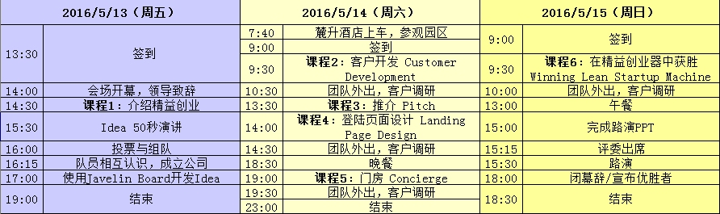

李开复推荐，微信、小米践行的训练营走进长沙
2016年05月10日
长沙高新区微软云暨移动应用孵化平台放大招，“精益创业”训练营为期三天的课程被我们从美国请来了。
先来介绍一下培训课程的主讲老师，看脸的年代，他本不需要靠才华。
特雷弗·欧文斯是Lean Startup Machine（精益创业器）公司和Javelin公司的创始人兼CEO，作家。他活跃在多个领域，是白宫创新研究计划的教练，也是普林斯顿大学与哥伦比亚大学的客座演讲嘉宾。欧文斯已帮助成千上万的初创企业创始人和个人在全世界开展新的业务，这些人来自包括谷歌、Salesforce、新闻集团、财捷集团等组织。
如果你对欧文斯先生还不太熟悉，没关系，我们来看看他要讲的是什么理念。

这本被誉为创业者必读的《精益创业》相信很多人都看过了。精益创业(Lean Startup)是目前全球领先的创业理念，源自美国硅谷，它代表一种不断形成创新的方法，受到全世界越来越多创业者的认可和推崇。Facebook、Twitter、微信、小米等一系列耳熟能详的企业或产品都是精益创业核心理念的践行者。李开复曾经为《精益创业》一书倾情作序并推荐。精益创业已经成为当下最具代表性的引导成功创业的方法论。
“精益创业”集训营是由微软与斯坦福大学科技创业计划主任Tina Seelig教授联合开发的体验式培训课程，旨在帮助创业者在短时间内学习精益创业理论精髓，掌握创业要领。该训练营通过三天的学习、外访、互动等环节，让创业者亲自体验定义产品、收集客户需求、寻找痛点，进而制作一个最小可发布的产品。这种体验式教学，只有身临其境才能体会。借用一句淘宝热词，错过这次，在中国应该很难参与了。
我们暂定此次“精益创业”训练营只定向邀请和针对入孵团队开放。还没有加入我们长沙高新区微软云暨移动应用孵化平台的小伙伴是不是有点心痒痒呢？小编温馨提示：把您的商业计划书（BP）发到长沙高新区微软云暨移动应用孵化平台的招募邮箱：teams@msstartup.cn，通过BP的筛选之后，我们会通知您路演的时间，通过我们的路演和背景调查，您就可以成为我们的入孵小伙伴啦！入孵之后各种福利，“精益创业”训练营，也是其中的一个福利，后续的福利很多，放大招的时机要把握住哦！所以，尽快投递BP才是王道，因为长沙高新区微软云暨移动应用孵化平台在5月27日就要进行第二期团队的第二次路演了。怎么做？你懂的！
“精益创业”训练营日程安排表：

参加“精益创业”训练营需要提前准备一些东西：
1.一个创业的想法(请在报名时填写，如没有请填无)
a）你可以准备一个idea，在周五晚上用50秒时间阐述你的idea，并现场组成团队。如果现场没有足够多的人选择你的idea，你也可以加入其它团队。
b）你也可以不准备idea，现场加入你喜欢的idea团队。在周六和周日两天的执行时间里，我们将会邀请身怀绝技或创业成功的大咖导师与团队交流，为参赛者出谋划策。
2.一台电子设备（笔记本电脑、iPad都可以）
3.一颗开放学习的心
4.一次周末时光
时间：2016年5月13-15日
主办方：微软（中国）、长沙高新区创业服务中心
承办方：长沙高新区微软云暨移动应用孵化平台

更多详情请访问www.msstartup.cn